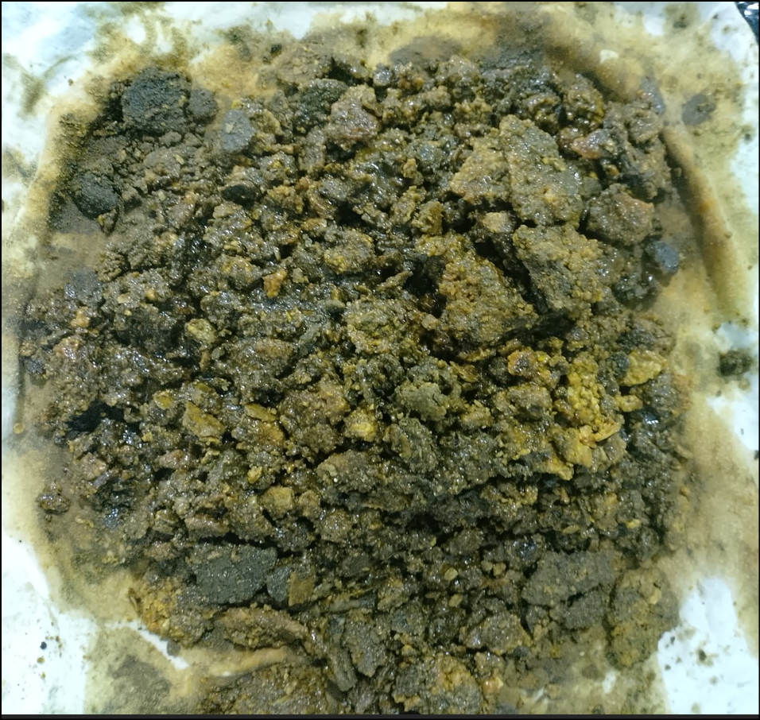
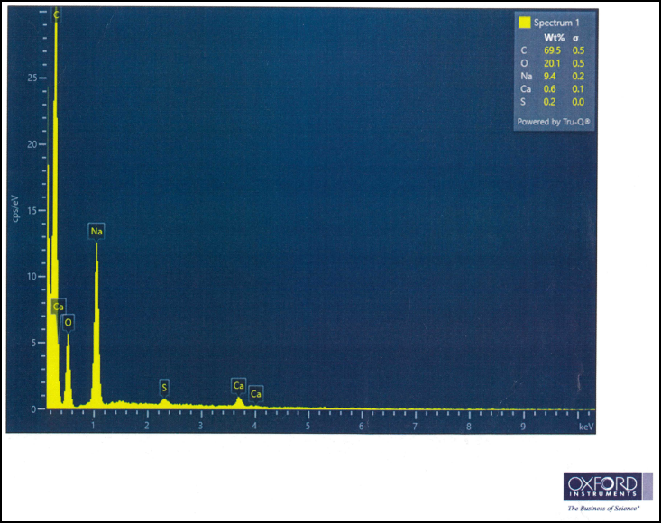
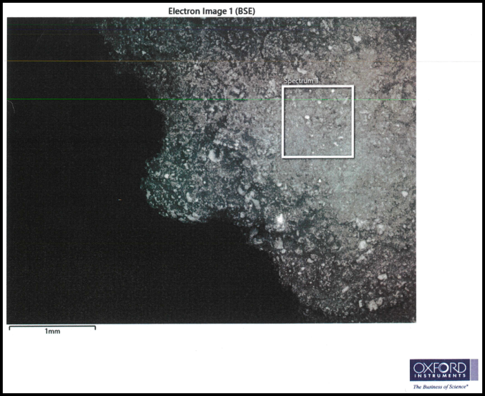
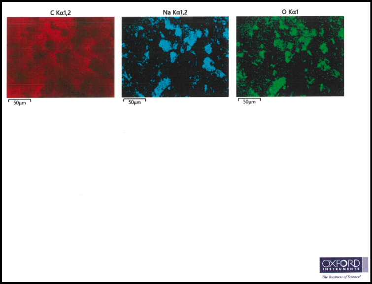
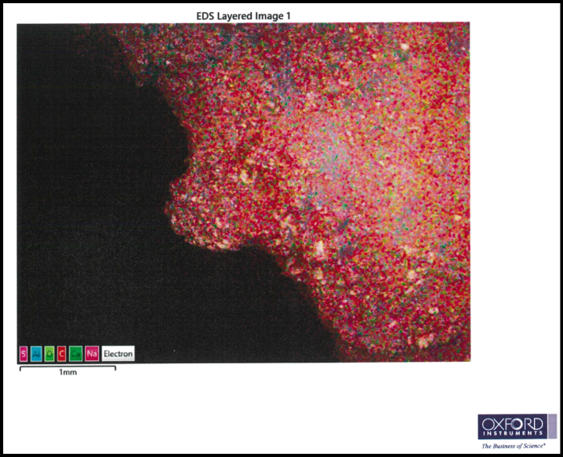
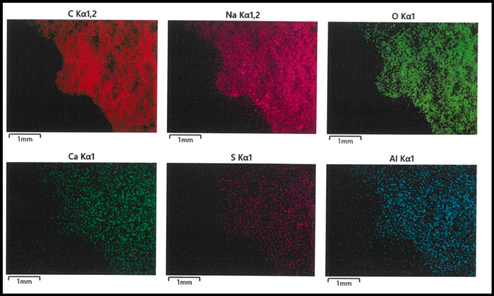

隨著全球海事組織（IMO）對船舶排放法規的日益嚴苛，特別是針對氮氧化物（NOx）與硫氧化物（SOx）的排放限制，現代商船主機的設計已從傳統的機械式燃油噴射轉向高度複雜的電子控制雙燃料系統。在這一背景下，MAN Energy Solutions 推出的二行程低速雙燃料引擎，結合了高效的廢氣再循環（EGR）技術，成為滿足 Tier III 排放標準的核心方案。
然而，在實際營運過程中，特別是以液化天然氣（LNG）為燃料且配備 EGRBP（Exhaust Gas Recirculation Bypass）系統的機型中，掃氣室內出現不明沉積物的現象時有發生。這類沉積物不僅影響掃氣效率，更可能引發掃氣室火警或導致氣缸組件的異常磨損。本報告將基於提供的掃氣室沉積物 SEM-EDX 化驗圖像，結合引擎設計概念、燃油特性及化學反應機制，對沉積物的形成原因進行深入探討。
SEM-EDX 化驗圖像






一、引擎型號與設計架構分析：EGRBP 系統的技術背景
要理解掃氣室沉積物的成因，首先必須剖析主機型號的設計細節。根據提供的資訊，該引擎型號為 MAN B&W EGRBP，這代表了一套特定的技術組合。
1.1 命名法與技術規格解讀
在 MAN B&W 的命名體系中，每一個字母與數字都承載了關鍵的設計參數。例如，「G70ME-C10.5-GI-EGRBP」這類典型的型號，其各部分的意義如下：
- 數字「5」或「6」代表缸數
- 「G」代表超長行程（Green），旨在提供更低的轉速以適配大直徑螺旋槳，從而提高推進效率並降低 CO2 排放
- 「70」代表缸徑為 70 厘米
- 「ME-C」則指代全電子控制的緊湊型設計
- 「GI」標誌著該引擎採用高壓氣體噴射（Gas Injection）技術，遵循狄塞爾循環（Diesel Cycle）原理
- 「EGRBP」代表該主機配備了「廢氣再循環旁通」（Exhaust Gas Recirculation Bypass）系統
1.2 EGRBP 系統的工作原理
EGR 技術的核心是將部分排放的廢氣重新引入掃氣室中。由於廢氣相較於新鮮空氣具有較高的熱容且含氧量較低，這能有效地降低燃燒室內的最高火焰溫度，從而抑制熱力型 NOx 的生成。在 EGRBP 配置中，廢氣的循環是通過一個「高壓迴路」實現的，廢氣在進入渦輪增壓器之前被抽走，經過洗滌與冷卻後，再引回掃氣系統。
| 系統組件 | 功能描述 | 對沉積物形成的潛在影響 |
|---|---|---|
| EGR 洗滌器 (Scrubber) | 使用 NaOH 溶液中和廢氣中的 SOx 並移除顆粒物 | 洗滌水帶入（Carryover）會導致鈉（Na）沉積 |
| EGR 冷卻器 (Cooler) | 降低循環廢氣溫度，增加掃氣密度 | 冷卻效率下降會導致局部高溫或冷凝水過多 |
| 旁通閥 (EGB / CBV) | 控制廢氣與掃氣之間的壓差，確保廢氣流量 | 閥件黏滯會導致掃氣壓力波動，影響燃燒完整性 |
| 水霧捕捉器 (WMC) | 移除冷卻後的冷凝水與洗滌液滴 | 捕捉效率不足是化學沉積物進入掃氣室的主因 |
二、掃氣室沉積物的微觀特徵與元素組成分析
根據提供的 SEM-EDX（掃描電子顯微鏡與能量散射 X 射線光譜）化驗圖像，我們可以從分子層面剖析沉積物的具體來源。這類分析是確定沉積物成因的「金標準」。
2.1 EDX 能譜數據解讀
| 元素 | 質量百分比 (Wt%) | 標準差 (σ) | 潛在來源分析 |
|---|---|---|---|
| 碳 (C) | 69.5 | 0.5 | 燃燒不完全產生的灰份、碳化的潤滑油或燃油殘渣 |
| 氧 (O) | 20.1 | 0.5 | 金屬氧化物、硫酸鹽或碳酸鹽的組成部分 |
| 鈉 (Na) | 9.4 | 0.2 | 關鍵指標：主要源於 EGR 洗滌系統使用的 NaOH 溶液 |
| 鈣 (Ca) | 0.6 | 0.1 | 氣缸潤滑油中的鹼性添加劑（如 CaCO3） |
| 硫 (S) | 0.2 | 0.0 | 源於引燃油（Pilot Fuel）中的微量硫或廢氣殘留 |
⚠️ 關鍵發現：這組數據中最令人注目的特點是極高含量的碳（69.5%）和顯著含量的鈉（9.4%）。這與傳統燃用重油（HFO）的引擎沉積物有很大不同。在 LNG 引擎中，理論上燃燒應該非常潔淨，出現如此高比例的碳，暗示了潤滑油的過度消耗或在特定高溫條件下的裂解過程。
2.2 微觀形貌與元素分布映射 (Mapping)
BSE（背散射電子）圖像顯示出沉積物具有疏鬆、多孔且不規則的顆粒結構。這種形貌通常與氣相凝結或液滴乾燥後的殘餘物相符。結合元素分布映射，我們可以觀察到鈉（Na）與氧（O）在多個區域呈現高度共定位，這進一步證實了鈉是以氫氧化物（NaOH）或與廢氣反應後的硫酸鈉（Na2SO4）或碳酸鈉（Na2CO3）形式存在的。
此外，微量的鋁（Al）在二行程引擎中通常與氣缸套磨損或引燃油中的催化劑微粒（Cat-fines）有關，但在雙燃料引擎中，它也可能源於活塞環上的特殊塗層（如 Alu-coat）在運行初期的磨合損耗。
三、沉積物形成的化學反應機制研究
沉積物的形成並非單一過程，而是燃料燃燒產物、潤滑油成分與 EGR 系統化學品在高溫高壓環境下共同作用的結果。
3.1 鈉（Na）的來源與遷徙路徑
在 EGRBP 系統中，鈉的唯一顯著來源是 EGR 洗滌器。為了移除廢氣中的硫氧化物並防止系統腐蝕，洗滌水會循環使用並添加氫氧化鈉（NaOH）來維持 pH 值在 7 至 9 之間。
當 EGR 系統出現下列狀況時，鈉離子會進入掃氣室：
- 水霧捕捉器（WMC）效率下降：如果 WMC 發生故障或負載過高，含有高濃度 NaOH 的微小液滴（Aerosols）會隨廢氣進入掃氣接收器
- 洗滌水起泡（Foaming）：如果洗滌水中混入系統油（透過鼓風機密封洩漏）或燃燒殘渣，會大幅降低水的表面張力，導致產生大量泡沫。泡沫會被氣流直接捲入掃氣室，乾燥後在金屬表面留下白色的鈉鹽沉積
3.2 碳（C）與潤滑油的交互作用
雖然 LNG 是潔淨燃油，但二行程引擎始終需要氣缸潤滑油來保護活塞環與缸套。圖像的沉積物呈深黃褐色至黑色，這主要是碳化後的潤滑油。
在 LNG 模式下，氣缸壓力通常高於柴油模式，且行程更長。如果氣缸油的噴射量（Feed Rate）與實際負荷不匹配，過多的油膜會在高溫下發生氧化與聚合反應，形成黏性的油泥。這些油泥會捕捉廢氣中的微小煙炱（Soot），最終在掃氣室底部堆積成層。
3.3 鈣（Ca）與硫（S）的酸鹼中和反應
儘管 LNG 的含硫量極低（幾乎為零），但引擎仍需使用引燃油（Pilot Fuel），這通常是含硫量低於 0.1% 的超低硫燃油（ULSFO）。此外，循環廢氣中仍含有微量的二氧化硫（SO2）。潤滑油中的清淨劑主要是碳酸鈣（CaCO3），在酸性環境下會發生中和反應：
生成的硫酸鈣（CaSO4）是一種非常穩定的白色粉末。如果氣缸油的鹼值（BN）選用過高（例如在燒 LNG 時使用 BN 100 的油），過剩的 CaCO3 會與微量酸反應生成白色沉積。
四、引擎設計概念對沉積物形成的影響
4.1 掃氣系統的流場特徵
二行程引擎通常採用單流向掃氣（Uniflow Scavenging）。新鮮空氣與循環廢氣在掃氣接收器中混合，透過缸套底部的掃氣孔進入氣缸。掃氣孔通常帶有 20° 的切向角度，以產生強烈的漩渦（Swirl）。
然而，在掃氣室底部，氣流速度相對較低。含有油滴和洗滌水殘餘物的重顆粒會在重力作用下沉降到接收器底部。如果排水管（Scavenge Drain Pipes）發生堵塞，這些殘餘物會不斷累積，並在高溫掃氣（通常為 40-50°C，但在故障時可能更高）的作用下被「烘烤」硬化。
4.2 EGRBP 的負載控制策略
在低負荷運行時，渦輪增壓器的壓氣機效率較低。為了補償壓力，EGR 系統的鼓風機（Blower）會全速運轉。在這種情況下，循環廢氣的比例大幅增加。如果此時洗滌器的水位控制不精確，或者冷卻器發生局部結露（Condensation），液態水進入掃氣室的風險會成倍增加。根據服務通函（Service Letter），EGR 系統應每兩週進行一次功能測試，以沖刷系統內的顆粒積聚。
五、沉積物成因的深度綜合評估
綜合以上化驗數據與設計特性，該主機掃氣室沉積物的形成可歸納為以下連鎖反應：
- EGR 洗滌水帶入（核心原因）：9.4% 的鈉含量強烈暗示 EGR 系統中存在液滴夾帶或起泡現象。這可能是由於 NaOH 加藥過量、水霧捕捉器損壞或洗滌水循環泵故障導致的。
- 潤滑油過度碳化：69.5% 的碳含量顯示沉積物的主體是「碳化油泥」。這可能與使用的是傳統 Category I 潤滑油而非專為 Mark 9 及以上引擎設計的 Category II 高溫清淨性潤滑油有關。
- 掃氣溫度與排水管理不善：圖像中的顆粒狀結構顯示這些物質在掃氣室中停留了很長時間。如果掃氣排水閥常閉或管道半堵塞，油水混合物會不斷在底板上受熱固化。
六、沉積物對引擎運行的風險評估
沉積物的存在不僅是視覺上的髒亂，更隱藏著嚴重的機械故障風險。
6.1 掃氣室火警 (Scavenge Fire)
掃氣室是充滿新鮮空氣（氧氣充足）的封閉空間。當累積的碳化油泥（燃料）因活塞環漏氣（Blow-past）產生的火花或高溫氣體（熱源）點燃時，就會發生掃氣室火警。
根據歷史案例，含有高比例碳和微量鈉鹽的油泥具有較低的自燃點。火警一旦發生，會損壞氣缸套的熱處理層、導致活塞桿填料函（Stuffing Box）失效，甚至引發曲軸箱爆炸等災難性後果。
6.2 氣缸異常磨損與鏡面拋光 (Liner Polishing)
如果硬質的白色沉積物（如 CaSO4 或乾燥的鈉鹽顆粒）被氣流捲回氣缸內，它們會充當研磨劑，加速活塞環與缸套的磨損。
此外，這些沉積物會附著在活塞頭頂部及頂環槽周圍（Top Land）。過多的積碳會接觸缸套內壁，磨平缸套上的珩磨網紋（Honing marks），形成所謂的「鏡面拋光」。一旦失去網紋，潤滑油膜將無法附著，導致嚴重的「拉缸」（Scuffing）風險。
七、針對性的改善措施與維護建議
為了消除掃氣室沉積物並確保主機安全運行，應採取以下綜合管理策略。
7.1 潤滑策略優化：轉向 Category II 油品
對於 MAN B&W Mark 9 及其更新系列的引擎（尤其是配備 EGR 的型號），MAN ES 強烈建議使用 Category II 潤滑油。
| 潤滑油類別 | 清潔性能 | 適用情境 |
|---|---|---|
| Category I | 標準清潔度 | 早期 Mark 8 及更老型號，無 EGR 之低負荷主機 |
| Category II | 卓越清潔度 | 所有 Mark 9 及以上型號、雙燃料引擎、配備 EGR 或 SCR 系統之主機 |
✅ 建議：在燃用 LNG 時，建議使用 Category II BN 40 氣缸油。這種油品具有極強的清淨分散能力，能防止潤滑油在高溫下形成硬質積碳。同時，BN 40 提供的適度鹼性能夠中和微量的酸，而不會產生過剩的白色鈣鹽沉積。
7.2 EGR 系統管理與化學平衡
針對檢測到的 9.4% 鈉含量，必須加強對 EGR 水處理系統的監控：
- 精確控制 NaOH 投加量：應將洗滌水的 pH 值穩定在 7.0 至 8.5 之間。過量的 NaOH 會顯著增加鈉離子的帶入風險
- 定期檢測洗滌水起泡趨勢：應每週取樣檢查循環水的起泡程度。如果發現起泡，應立即添加消泡劑（Anti-foaming agent），並檢查是否有系統油洩漏進入 EGR 迴路
- WMC 與 EGR 冷卻器清潔：應根據保養手冊定期（通常每 500-1,000 運行小時）對 EGR 冷卻器進行化學清洗，並檢查水霧捕捉器的格柵是否完好且無鹽垢堵塞
7.3 掃氣系統的實體維護
物理上的預防措施同樣不可或缺：
- 保持排水暢通：實施嚴格的「常開」排水策略。在引擎運行的任何負荷下，掃氣排水閥應始終處於微啟狀態，並每日巡查排水量與顏色
- 定期的掃氣口檢查（Scavenge Port Inspection）：每月進行一次掃氣口檢查。利用攝像設備記錄活塞環的自由度與缸套表面的油膜狀況
- 掃氣溫度監控：確保掃氣冷卻器後的空氣溫度與設定值偏差不超過 2°C。異常的高溫會加速油泥的熱裂解過程
7.4 掃氣引流油分析 (SDA) 的應用
應每 1,500 小時向原廠或認可實驗室提交一次掃氣引流油樣本。除了監測總鐵含量（Total Iron）外，應特別關注殘餘鹼值（Residual BN）。
在燃用 LNG 時，如果 SDA 結果顯示殘餘 BN 降至新鮮油品的 50% 以下（對於 BN 40 油即低於 20），這通常是 EGR 洗滌水（酸性或強鹼性波動）或海水（如果冷卻器洩漏）進入氣缸的早期信號。
結論與展望
通過對 MAN B&W EGRBP 主機掃氣室沉積物的多維度研究，可以得出結論：該沉積物是由於 EGR 系統化學品帶入（鈉鹽） 與 氣缸潤滑油熱降解（碳殘渣） 共同作用產生的複合產物。
- 顯著的鈉含量是指向 EGR 洗滌器運行異常的關鍵證據
- 高比例的碳則反映了當前潤滑油清淨能力或給油率在長行程、高壓雙燃料環境下的不足
展望未來，隨著船舶運營商對環保與效率的雙重追求，類似 EGRBP 這樣的高精密系統將成為標準配置。這要求輪機人員從傳統的「經驗型維修」轉向基於「數據與化學分析」的預防性保養。通過全面升級至 Category II 潤滑油、精細化管理 EGR 水質參數、以及嚴格執行掃氣排水監控，運營商不僅可以消除沉積物帶來的安全隱患，還能最大程度地延長引擎組件的使用壽命，實現綠色航運的長期目標。